I'm sorry to say this, but sometimes I see certain celebrities and think, "What are you people doing to your faces?"
Ya gotta admit he plays a good sociopath.
bolito
Mr. Fallon
poll results: 50% of men fantasize about dying by another man's hand
Now, big fella, ... ... ... bend ... this ... iron ... bar.
Mommy, why can't they all be Globetrotters?
I'm so glad I don't work in politics - both sides losers!
Nikki Haley's singin' Johnny Cash: "I may be right and I may be wrong, but you gonna miss me when I'm gone."
Has there ever been a better time to NOT VOTE?
Look, I understand
that you think
I'm just not doing this right.
Well,
as soon as you explain it to my face,
I'll try to understand that.
Policy positions:
You might get stuck with a war,
You might get stuck with a lost war,
You might get stuck with a war that never ends.
My own little "game", which I have developed over the years:
Personality types:
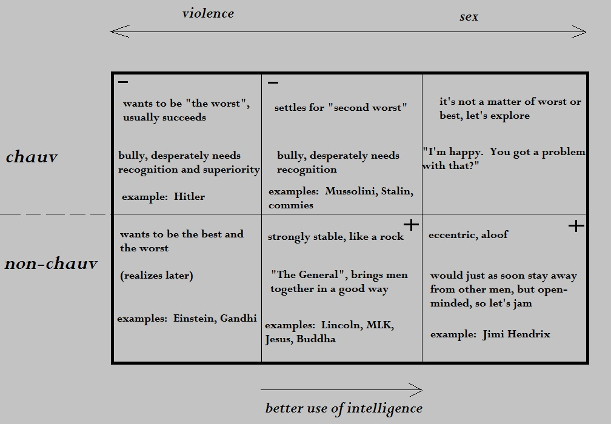
Motives:
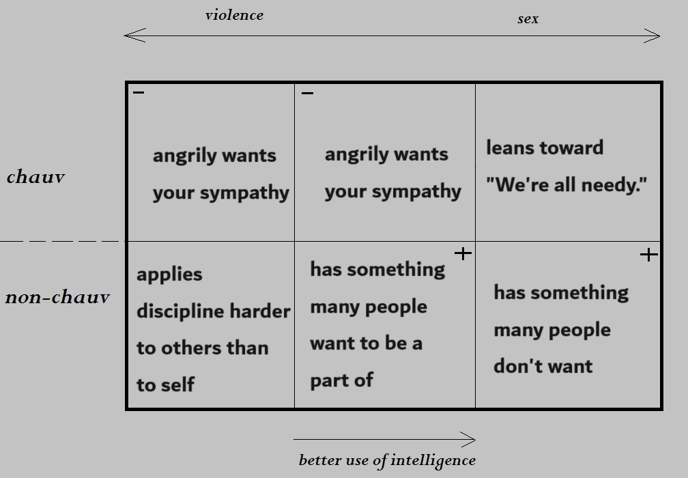
Intelligence types:
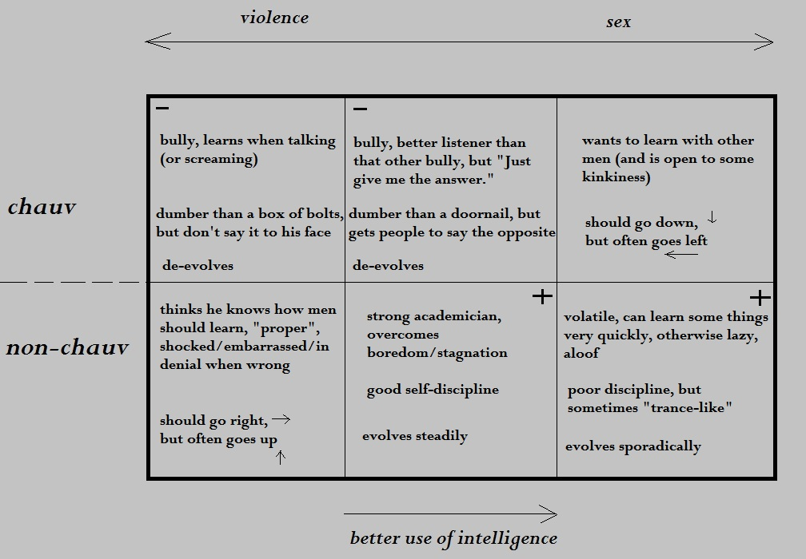
Sexuality types:
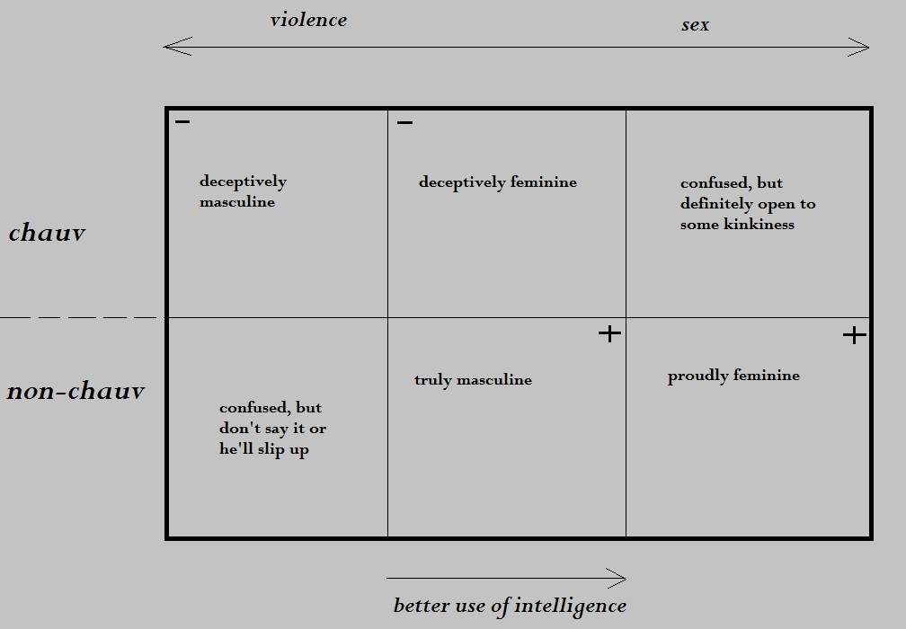
Here is the "female" gameboard, which sits/slides atop the "male" gameboard, but I haven't figured out the positions yet. (I think it goes: negative, neutral, neutral, positive)
possible rough draft:
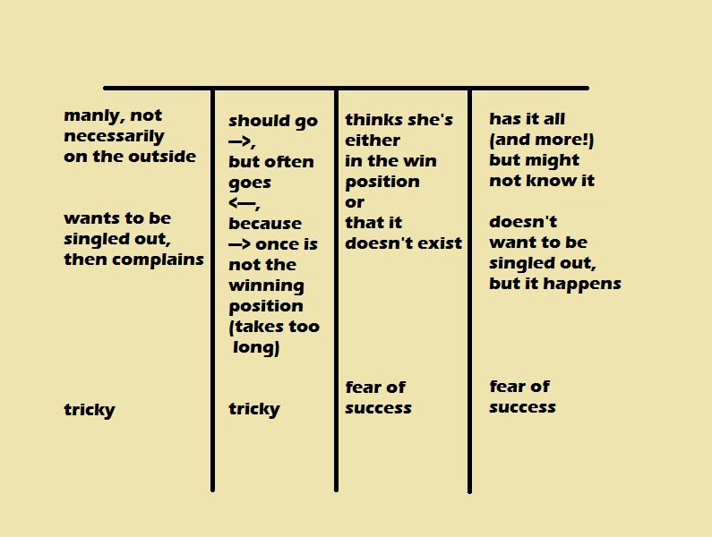
The female game board is simpler. It is linear, the "ranking" goes from left to right. In other words, the middle-right neutral position is better than the middle-left neutral position. (-, n, n, +)
Some miscellaneous characteristics:
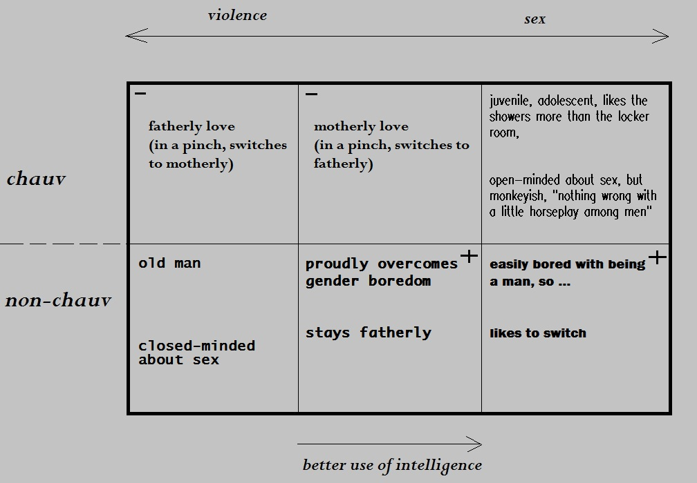
Imagine: people are using these ideas to analyze movies. 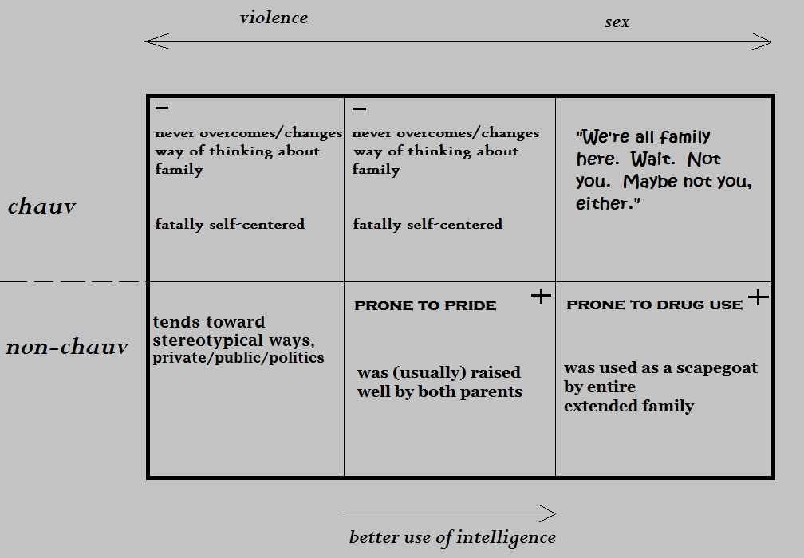
Each position can be split, perhaps more than once. Take the lower left position for example. A man is proud to be on the right side of it, but arrogance creeps back in, because he thinks that position is the entire gameboard.
The 4 edge (corner) positions tend to keep going off the edge. The 2 center positions tend to go up/down.
The female gameboard positions tend to go inward, because they know it's just a game and women tend to kiss and hug more than men. Also, any change of direction isn't as obvious as with men. The movement tends to be more internal.
Personality types:
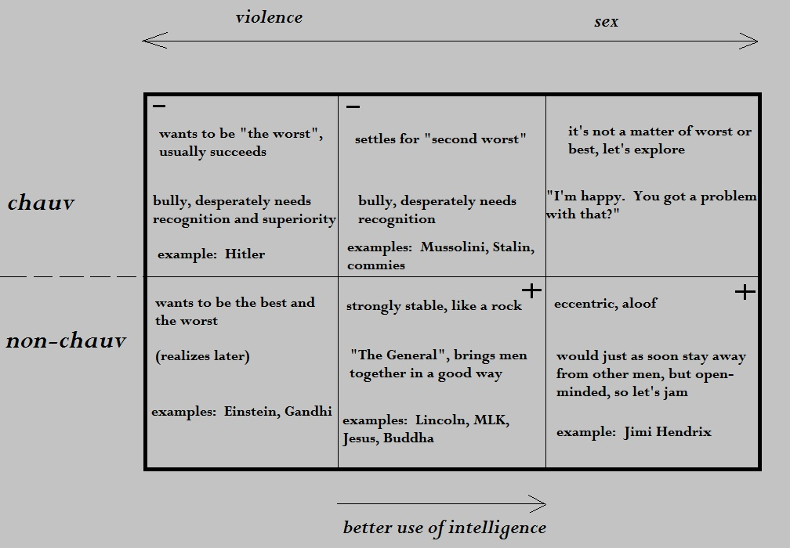
Motives:
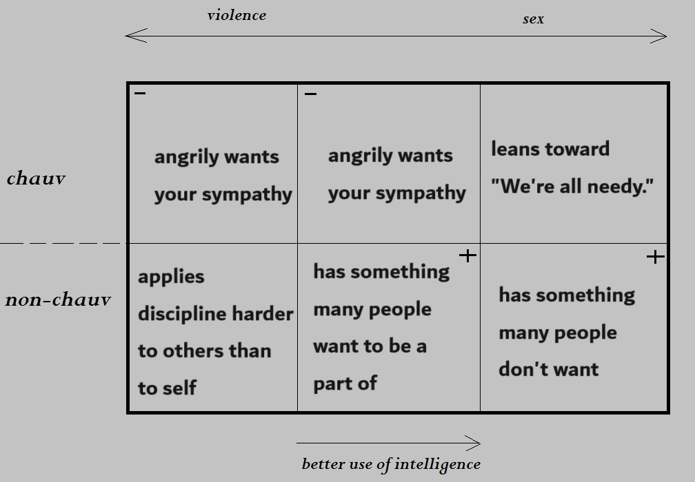
Intelligence types:
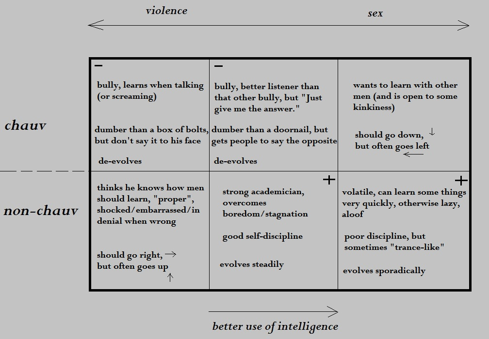
Sexuality types:
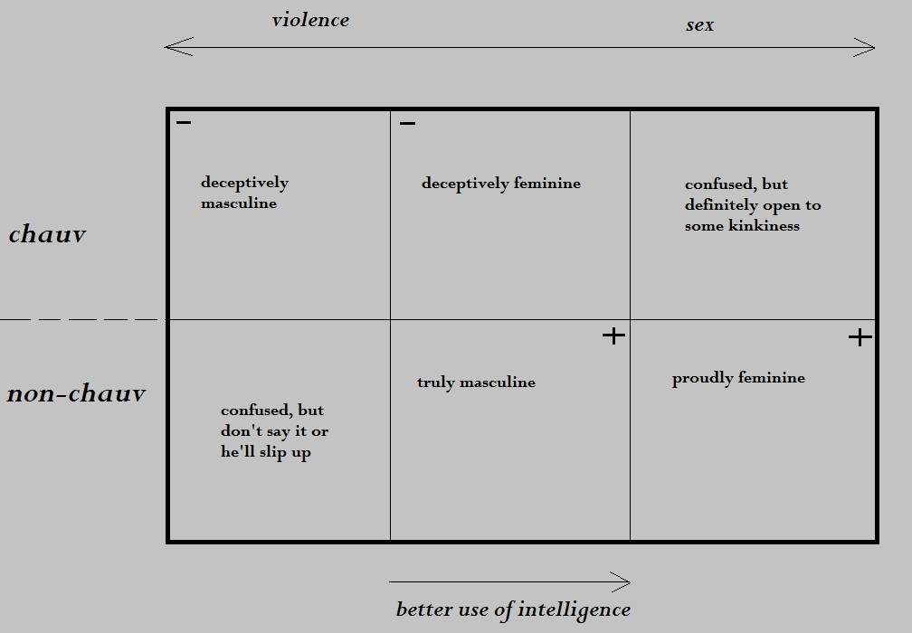
Here is the "female" gameboard, which sits/slides atop the "male" gameboard, but I haven't figured out the positions yet. (I think it goes: negative, neutral, neutral, positive)
possible rough draft:
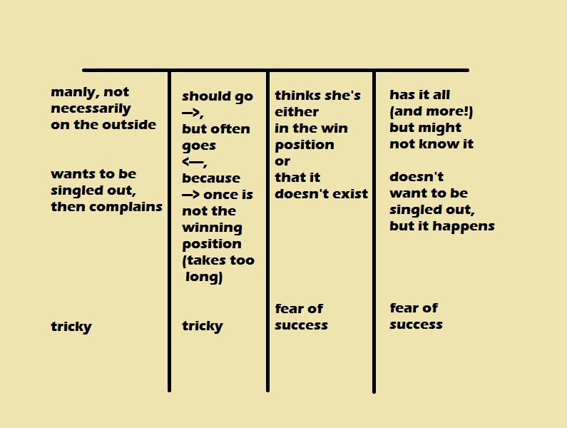
The female game board is simpler. It is linear, the "ranking" goes from left to right. In other words, the middle-right neutral position is better than the middle-left neutral position. (-, n, n, +)
Some miscellaneous characteristics:
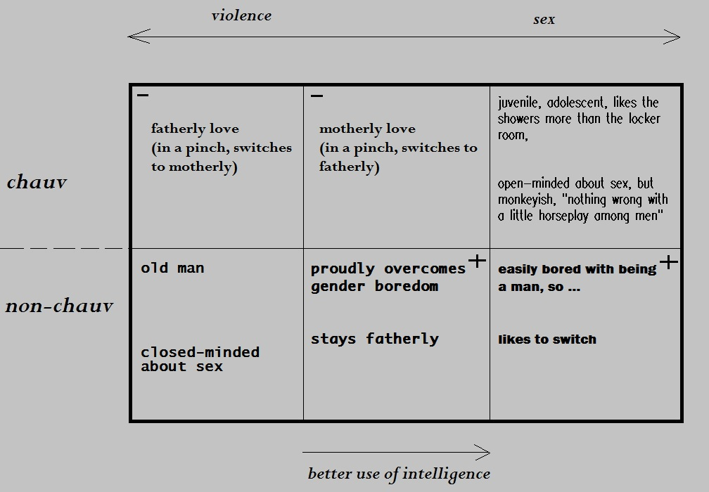
Imagine: people are using these ideas to analyze movies. 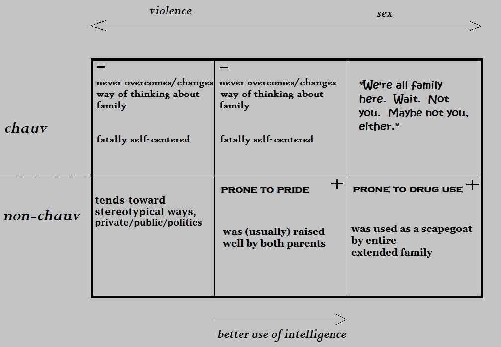
Each position can be split, perhaps more than once. Take the lower left position for example. A man is proud to be on the right side of it, but arrogance creeps back in, because he thinks that position is the entire gameboard.
The 4 edge (corner) positions tend to keep going off the edge. The 2 center positions tend to go up/down.
The female gameboard positions tend to go inward, because they know it's just a game and women tend to kiss and hug more than men. Also, any change of direction isn't as obvious as with men. The movement tends to be more internal.
"I guess I need that city life,
It sure has lots of style,
but pretty soon it wears me out
and I have to think to smile,"
~ Neil Young, "Country Home"
Imagine a father who has millions of dollars when his son turns 18. Does he give the kid a mil or make him get a job? What would you do? Spoil him or torture the mofo?
I think I'll go plop myself down in some anti-American country where nobody speaks English. Wait. They probably do know English there. Ehh, ... I'll just go to Italy.
I know a girl
who was raised to be a beauty queen
and nothing else.
The "and nothing else" part ended up being
more important than the beauty queen part.
Her father raised her to be
a beauty queen
AND
NOTHING
ELSE.
YOU DON'T GET SMART WITH RINGO, NOW!
I made the mistakes of the older generation and now I'm making the mistakes of the younger generation.
Abraham Lincoln, the first and only good Republican, ended slavery, but slavery's close cousin, racism, is alive and well in Pleasantville, New Hampshire, of all places.
Okay, Nixon was good, but who's ever going to admit that? Did he end the Vietnam War?
"There's more than one way to skin a cat."
"C'mon, mothers throughout this land,
Pack your boys off to Vietnam,
C'mon, pops, don't hesitate,
send ‘em off before it's too late,
be the first one on your block
to have your boy come home in a box,"
~ Country Joe McDonald
I simply refuse to have my days dictated by hordes of motor vehicles.
Okay. Going to momsie's and popsie's now. Can't wait to get back home and make myself sick with alcohol.
They don't talk to each other. They read each other's minds. Is this normal for couples who've been married for 700 years?
Do you fine-tune what you want your kids to be when you grow up? You know, no not a teacher, okay maybe a professor, how about a firefighter? orrrrr maybe a ____________, but a very __________ ________________? No, don't be a doctor, be an engine ear, no, yes, no, not, yes maybe a truck driver. Noyes, a manager, yeah, no? a teacher? no, you said that already, maybe a writer? a factory worker? amechanic, yes, no. a tarbender, yesno.
Human society will conclude that abortion is a war between:
a) women and men
b) women and women
c) women and children
d) not
?
"Jesus, Miranda. You took my children away from me. I can only see them now with supervision, some woman who comes and watches me with the kids, like I'm some sort of deviant. If I try to hug them, she wonders why."
problems with generations:
The Private Generation: they want YOU to reveal your privates
Boomers: they go BOOM BOOM and you better, too!
X: they think they're eXempt from everything
Y: ?
Z: ?
Does size matter? At what age is a child capable of killing an adult?
Catapulting the war within,
snapchatting snapped shut,
the beginning of innosense,
sanfu word-crosssing, cleeshay with that little mark above the e,
slingshot,
slingblade,
exploiting the overstating of the obliviously obscene,
it's catchy.
My pops and I have the same fantasy: a cabin in the woods.
Da nihilists try to deny your existence and,
if you persist,
they try to eliminate your existence.
Such strong desire.
Ladies, the Kavanaugh lesson follows in the footsteps of the Thomas lesson: don't wait for the exact rightwrong moment.
I don't really like weddings, because they just turn into dances, although now I know what to do when the dancing starts: take a three-hour break.
My next novel: "When Millionaires Try To Slip Back In"
All computer jobs involve troubleshooting, unless you're troublemaking.
The conversation was getting snide.
She said to me, "Not as many people like you as you think."
I replied, "I don't care if nun of them like me."
"Somewhere in the middle of the conversation, it changed. They were still using the same vocabulary, but now they were talking about each other."
Well, a consensus has finally been reached and it isn't good. Dude, you are getting one big, collective thumb down.
married 25 years, 1 kid
married 7 years, famously puts down her biological father
same story? 2 celebs marry, have kids, eventually divorce? or will she cut his balls off?
If you've learned some tricky sociological concept "only because of the times we all live in", so what? Go with it.
Holy shuzzbot. Some guy walked past Robert Kiyosaki and asked him how his poor dad was. It was super crass.
I'ma little over-the-top here now. Wups.
Come here and say that.
Becky Conner: Go to hell!
Darlene Conner: Go to the mall!
Keep plowing forward,
never looking back,
never learning,
always yearning, burning, itching, scratching,
You a raptor,
doin' what you kan,
gonna eat everything 'til the appearance of man.
What? He's the only b-ball player I could think of at the moment,
because he's loco to me and you desperately needed
something to look at besides my words, so thar ya go.
Who wants to sit courtside?
Whenever I see blonde hair and no lips, I think "racist." Should I feel sorry? Embarrassed?
Through all the tricky things they be saying,
have you figured out yet
what they're NOT saying?
The three women had become best friends for life.
The first one
had been with dozens of men
by the time she was 30,
yet somehow
the subject of marriage was never mentioned.
The second woman was a virgin
and proudly public about it.
Everybody knew,
just like everybody knew how the first woman was.
The third woman
was a stripper,
a massage therapist,
an escort
and an animated porn star,
yet
also a virgin.
She stripped for men,
but never had sex with them.
She massaged men,
but never had sex with them.
She "escorted" men at public events,
but never had sex with them.
She did anime porn,
with all the freaky video technologies,
props, gadgets and doodads
in front of many men with cameras,
but never had sex with them.
I love all three of them,
even the skanky ho,
and you can, too,
for just $19.95 a month.
When you see the Southern Cross for the first time,
you understand now why you came this way:
hot, butt-nekkid Lesbo action.
She had completed the fantasy before ever getting the chance to share it with an actual player. That required some frustration.
The big cat brought down the animal,
slightly bigger than itself,
and began devouring,
even though she wasn't hungry
in the usual sense.
"He was happy just to finally call himself human."
He had struggled for a long time,
going through all the motions,
including the ups and downs of the people 'round him,
all their wicked head tricks.
After a full recovery,
an overcoming,
a breakthrough,
he was awakened to something worse.
The Ph.D. candidate had figured out some of the most complicated concepts, but her advisor just kept saying, "Keep going." She pleaded that her proofs were complete and the advisor agreed, but the advisor kept saying, "Keep going." It was slightly disturbing.
He loves throwing wicked curveballs,
to them, it scares,
to him, enthralls,
pulling rank,
turning flank,
making them go
completely blank.
"This isn't an academic institution."
~ 2-year college instructor (with a Ph.D.)
I wouldn't be financially successful as a psychologist. Sessions would be short.
I still haven't learned how to make friends.
Somewhere in midlife,
no matter what your lingering problems,
you have to realize
that some young people might look up to you
and maybe some old people, too.
I'ma gonna miss my parents. Coupla warriors right there. Jeezum H. Cripes anyvay.
I calm to bot yo neck. Bluh. Bluh.
The Jap chicks understand that not having kids isn't lonely. Their country has reached population equilibrium.
If anybody can do it, why do so few?
A genda,
per, say, perturbation,
neural enunciation,
Catholick ego, not necessarily in public.
A man's throne,
a kid's toilet,
a woman's home-on-wheels.
The sex was unplanned. The subsequent murder was almost made into a war?
It was no longer "I didn't do it."
He looked her in the eyes
as he pulled down the shade
and said,
"I'm not doing this."
He could clearly see his own eyebrows.
If you have at least three kids, the oldest one probably won't be schizophrenic. He/she is very clear-minded.
We were malnourished growing up. Ma didn't like to cook. She felt it was oppressive, chauvinist. So we ate plenty of frozen pizzas, fish sticks and MikkoDokko's.
The old brute was far-right,
which caused his wife and three daughters
to be far-left.
Furthermore,
they felt proud
to expose him as actually far-left.
They were proud to have "tamed" the lion.
After teaching college for many years,
the biggest philosophy
the Ph.D. had learned
was ... "it's nice to be important, but it's more important to be nice."
It was oversimplified,
which is obviously frowned upon in the academic arena,
yet so true.
I had read a few books about drugs,
written by M.D.s and Ph.D.s.
I found it interesting
and a real-world, practical problem
that needed at least a little convo.
At the end of one book,
written by a bearded, Harvard-trained herbologist,
the author wrote something like
"Now I'm going to India to teach children how to use drugs intelligently."
Because of how he was raised,
he seemed to easily become a doctor.
Deep down, of course, he knew he wasn't that bright.
He hadn't spent much time
thinking about how to be bright.
He just knew his family
was better off than most.
There was an acronym for him,
which he knew before it was publicly coined:
DWAD: Dunce With A Doctorate
One boy gave up on sex.
Instead,
he set out to know everything.
Another boy also gave up on sex.
Instead,
he set out to know everyone.
Perhaps two reasons women have not yet fully infiltrated physics and computer science
is because many men are hell-bent on proving
that men are better at studying non-human concepts
(better at BEING non-human)
and
that it's okay to be chauvinist.
("Hey. Women do it, too!")
"I like women. Does that make me a feminist? Then so be it."
~ MeShell N'Reefin D'NeDejjlo Du Jwo NaturoDoe
So this gaslighting phenomenon: getting someone to second-guess themselfses?
Like ... "I may not be right, but you're definitely wrong."
although I think it usually goes in the opposite order:
"YOU'RE WRONG!"
I thought you were going to make this all about computer science?
Let's say we're examining two women of equal beauty. We have still pictures and video, but before we go from still picture to video, even before seeing facial expressions, I want to see their eye movement.
The biggest victory
is overcoming arrogance, but
sensationalizing that
would be arrogant?
He would get up,
disconnected from whoever he was with,
put on his robe and slippers,
light a cigarette and put it in a cigarette holder,
curl a piece of paper into his typewriter,
and so become ... Tennessee Williams.
My next pro-anti-pro-antagonist: JeckylHyde Johnson
Maybe it's the opposite way in some other parts of the world, but here in HonkeyLand, Jews get saved, Muslims get blamed and I ain't so privy wit it either, dawg.
guff: trivial or foolish talk or ideas; social projection of guilt
After "overcoming" his father so easily,
he felt embarrassed.
When he realized that his father overcame him,
he felt embarrassed again.
Whenever I walk past people playin' ball in an open field, the ball comes bouncin' my way and I ain't talkin' metaforfically.
Far-sightedness is one thing. Trying to communicate with me from 50 feet away is another.
Dude, I'm sorry, but I AM NOT FAR-SIGHTED, okay?
This is how I think about the people of USA:
1. North (Midwest) - timid (like the Japanese?), but timidity can turn snobby, obese
2. South - still tryn'a figger out racism, (trying to justify it?), obese
3. West - show busy, tech nickel, arrogant (because of the weather?)
4. East - wall-to-wall horseplay, (who does your farming?), rabid mean
Continental 48 states - mostly the same. Hawaii/Alaska, ehh. (like New York and Wyoming?)
At least for amusement, she wanted he and his friend to fight. He wanted she and her friend to kiss.
She was a femme fatale. He was a perv.
There are so many signals in the air carrying my thoughts ... some people need no technology at all.
Some people want to get close to me to get better reception.
Some people want to avoid me, when they're not in the mood to think?
The PD/FD have been doing alot of T-stop Peek-a-Boo drive-by's. You know, they study which roads I take and if I'm on a long one, they do the Peek-a-Boo toward the end. It's a safe bet that I'll see their handsomeness.
Ernest Hemingway had the remarkable ability to remember every word of 30-year-old conversations.
older-adult-onset autism?
After giving up on owning a house, I moved into a fancy 2-BR apartment and looked for a roommate. Rather surprisingly, this 20-year-old woman non-chalantly says she'll give it a shot, which felt weird. I mean, here's this chick who's half my ... daughter's age. We agreed there would never be any mention of sex. That was fine. We both just needed to save money. One weekend night, she has her girlyfriends over and ... they ... were ... ... ... energetic, to say the least, talking incessantly until 3:00 in the morning. The last hour was the most intense. The conversation seemed metaphorically hostile, yet still tolerable. On the sharpest, loudest note, my roommate's girlyfriends abruptly left. I was afraid she was going to look at me with an intensely serious look and give me a threat that would knock my testicules off, but to my suprise, she smiled and slowly blinked. That became our secret code for ... something I might tell you about later.
So this older woman was telling me how she had never been with a man.
She said, "I'm not exactly pure. I've been with women, so I guess I cheated."
I said, "Oh, that's not cheating. That's like a priest who masturbates."
Many people come to talk to me, but
only with something between us.
Have you ever noticed how some child acters have to go through emotionally difficult phases ON CAMERA? It ain't just puberty, either. Will they have to do that throughout their entire adult lives? Ya oughta make them kids millionaires.
Give 'em a sight, a fright,
to get that animal to do its thing,
you worked meticulously
all through the night,
audience of one?
audience of many?
mindlessly none,
all humans, every?
Each of us mocks and masters bait,
just for fun, who likes to wait?
Shadowing a naturally natural technique,
you vs. you vs. you are unique.
I had a lot of problems when I was younger - all the usual ones and maybe a few more.
"Clarky, you might not wanna pet him. He got a lip fungus ain't been identified yet."
It might take a very long time for me to get a job.
They all gotta collaborate,
then separate,
then collaborate again,
then pause and watch what I post,
then collabortate again,
then come to a consensus, a big thumb down,
then second-guess themselves,
then fool themselves,
then check ALL the info,
then collaborate again,
then think about the social consequences,
then conjure up a trick.
And the oppressed become the oppressors,
the students, the teachers,
after waiting so long for a god-damn war to save you.
Why bother helping anyone?
They're just going to suck the love out of your still-beating heart
and hold it in front of your face
to watch you die.
You see little hints
even in comedy.